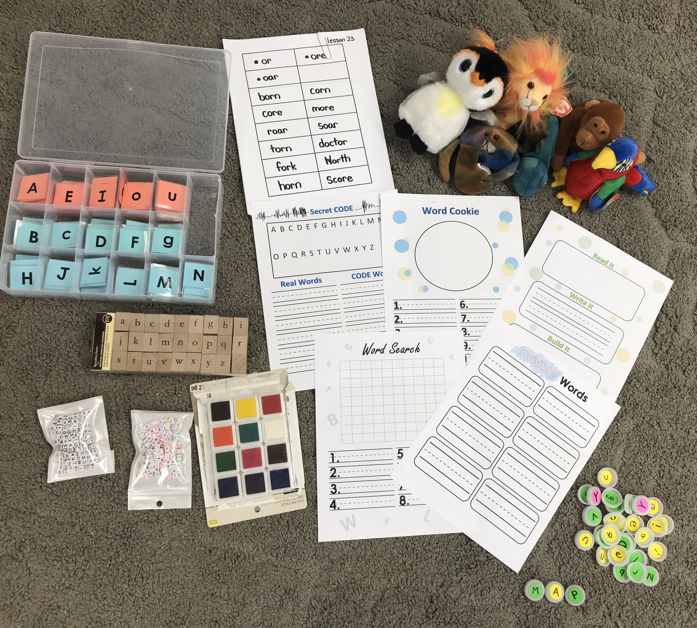

Every week I allow students to apply their skills in a hands on word work center. Depending on the week, students have the option to: bead their words, stamp their words, write in different utensils, create word searches, brain teasers, and secret codes. These activities allow students to manipulate the letters to grasp a better understanding and become more familiar with word patterns.
